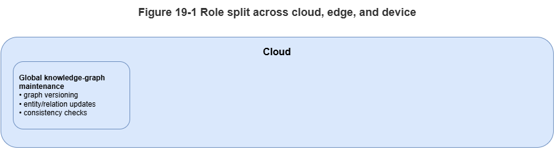
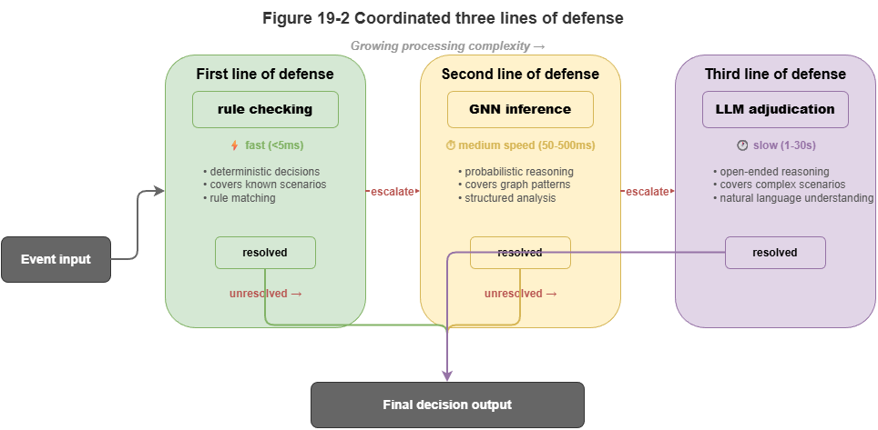
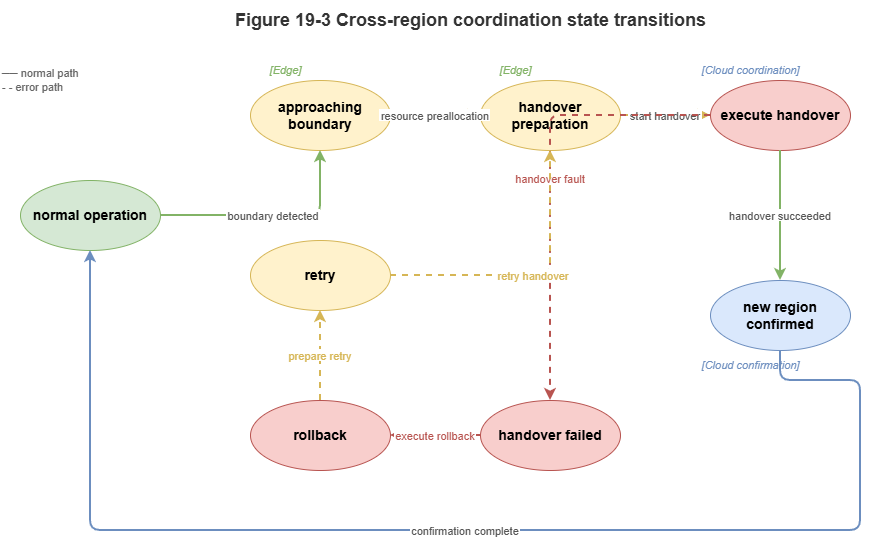

Chapter 18 argued that without addressing compute and latency, even advanced neuro-symbolic models cannot reach city-scale deployment. This chapter extends that view to cloud–edge collaboration: how to distribute KG, GNN, LLM, and rule engines across tiers for global coordination plus edge real-time trustworthy inference.
19.1 Roles of Edge vs. Cloud Inference#
Physical placement sets latency and resource ceilings. For low-altitude traffic we use a clear cloud–edge split:
Cloud center: Data-center scale, global view, tens to hundreds of milliseconds from vehicles.
Role: Full-city SkyKG; large LLMs; pre-flight strategic approval and macro weather; offline training, knowledge distillation, incident reporting. “Slow” System 2 brain.
Edge node / MEC: Near aircraft at 5G MEC or regional hubs—limited compute but often under 10 ms RTT.
Role: Local TKG; lightweight GNNs and hard-coded symbolic solvers; millisecond situational updates, conflict detection, emergency avoidance. “Fast” System 1 reflex.
19.2 Orchestrating Rules, GNNs, and LLMs Across Tiers#
Neuro-symbolic strength is complementary engines physically pipelined:
Edge first line—hard rules: High-rate telemetry hits a light symbolic engine (e.g., Datalog) for hard checks (no-fly intrusion, altitude limits). Violations block immediately without heavy AI.
Edge second line—GNN: Valid updates write to the local TKG; GNN message passing predicts 3–5 s conflicts with conformal uncertainty bands and avoidance hints.
Cloud third line—LLM semantics: When GNN marks high risk but locally unsolvable (large-scale congestion, severe weather) or regulatory corner cases, edge ships a context slice up; GraphRAG + LLM perform deep compliance and global replanning with human ATC review.
19.3 Streaming Ingest and Event-Driven Scheduling#
Urban low-altitude systems are always-on data firehoses. Polling wastes compute and adds delay; use event-driven architecture (EDA):
Streaming bus: Kafka, Flink, etc., ingest ADS-B, 5G reports, and fused tracks.
Filtered triggers: React only to meaningful state changes—steady on-route flight may skip graph recomputation; yaw beyond threshold, new entrant, or weather alert emits an update event activating GNN/rule pipelines.
Incremental KG updates: Each event touches only affected subgraphs—no full-graph rebuilds.
19.4 Knowledge Sync, Model Sync, and Consistency#
Distributed systems face CAP trade-offs. UAM favors availability and low latency over strong global consistency; we adopt eventual consistency and fan-out sync:
Knowledge push: Slow static updates to global SkyKG (temporary no-fly zones, regulatory deltas) incrementally reach affected edges to refresh local rule layers.
State pull-up: Edges downsample or abstract high-rate trajectories and periodically refresh the cloud macro picture.
Model OTA: Improved GNN weights trained in cloud deploy to edges via over-the-air updates.
19.5 Real-Time Alerting and Closed-Loop Response#
Inference aims at intervention. After edge conflict inference:
Alert degradation: Combine GNN output with Chapter 15 conformal bands—tight, reliable intervals may authorize automatic avoidance; OOD-wide intervals fall back to hard safety (e.g., hover-in-place).
Control downlink: Decisions send trajectory fixes to autopilots over the air–ground link.
Audit: Local graph snapshots, GNN output distributions, and fired rule IDs log asynchronously to cloud—closing the loop.
19.6 From Single-Node Feasibility to Multi-Node Scale#
Real SkyGrid-style cities have hundreds or thousands of edge cells; vehicles hand off between them.
Handoff / roaming: As a UAV moves from edge A to B, state vectors and trust tokens transfer smoothly so GNN history is not cold-started at the boundary.
Boundary coordination: Worst conflicts often sit on jurisdictional seams where each edge sees only local traffic. Neighbors need peer links or overlapping buffer zones so boundary aircraft appear in both local TKGs for message passing.
Cloud–edge restructuring makes neuro-symbolic algorithms fit physical constraints. Chapter 20 drills into spatiotemporal graph partitioning and high-concurrency engines for million-scale operations.
Chapter Summary#
This chapter covered distributed reasoning under cloud–edge collaboration: cloud vs. edge roles (slow vs. fast thinking); layered defenses—rules, GNN, LLM; streaming buses and event-driven scheduling; eventual consistency for knowledge, models, and state; real-time alert–control–audit loops; and handoff plus boundary coordination for multi-node continuity.
Key Concepts#
Cloud–edge collaboration: Tiering global slow inference vs. local fast inference by location and latency.
Event-driven scheduling: Activating pipelines only on meaningful state changes.
Eventual consistency: Favoring availability and low latency in distributed state.
Real-time response loop: Detect → confidence check → act → log.
Handoff: Preserving state and trust when crossing edge jurisdictions.
Exercises#
Why should rules, GNN, and LLM not all run on the same tier by default?
What is the main advantage of event-driven architecture over periodic polling for low-altitude traffic?
Without boundary coordination, what class of risk is most likely?
Case Study#
Sudden weather at a regional edge: local TKG + GNN deliver second-scale warnings; if local deconfliction fails, context escalates to cloud for global replan and regulator-facing explanation chains.
Figure Suggestions#
Figure 19-1: Cloud, edge, and device role split.

Figure 19-2: Three-line defense—rules, GNN, LLM.

Figure 19-3: Handoff and cross-boundary state migration.

Formula Index#
Architecture and workflow focus; no unified derivations.
Index: cloud slow inference, edge fast inference, event-driven scheduling, eventual consistency, handoff.
References#
Shi, W., Cao, J., Zhang, Q., Li, Y., & Xu, L. (2016). Edge Computing: Vision and Challenges. IEEE Internet of Things Journal, 3(5), 637–646.
Satyanarayanan, M. (2017). The Emergence of Edge Computing. Computer, 50(1), 30–39.
Mao, Y., You, C., Zhang, J., Huang, K., & Letaief, K. B. (2017). A Survey on Mobile Edge Computing: The Communication Perspective. IEEE Communications Surveys & Tutorials, 19(4), 2322–2358.
Dean, J., & Ghemawat, S. (2008). MapReduce: Simplified Data Processing on Large Clusters. Communications of the ACM, 51(1), 107–113.
Kreps, J., Narkhede, N., & Rao, J. (2011). Kafka: A Distributed Messaging System for Log Processing. Proceedings of the NetDB Workshop.
Vogels, W. (2009). Eventually Consistent. Communications of the ACM, 52(1), 40–44.